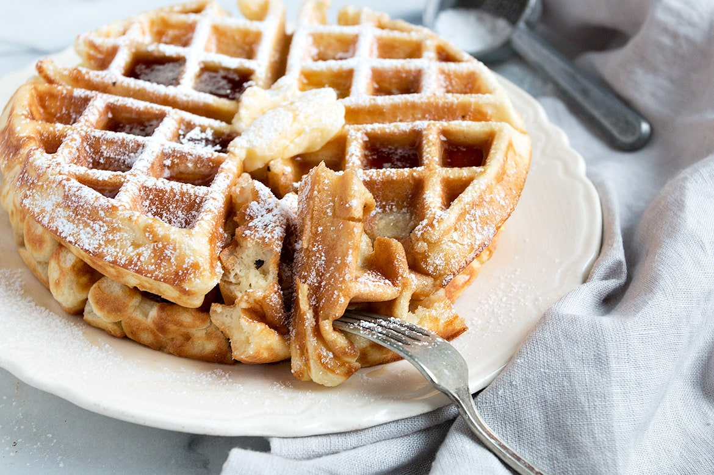

Classic Waffles

Description
A waffle is a dish made from leavened batter or dough that is cooked between two plates that are patterned to give a characteristic size, shape, and surface impression. There are many variations based on the type of waffle iron and recipe used. Waffles are eaten throughout the world, particularly in Belgium, which has over a dozen regional varieties. Waffles may be commercially cooked, frozen, and reheated, but we are going to show you how to make them fresh.
Ingredients
- 2 cups all purpose flour
- 1 teaspoon salt
- 4 teaspoons baking powder
- 2 tablespoons white sugar
- 2 eggs
- one and a half cups warm milk
- one third cup butter, melted
- 1 teaspoon vanilla extract
Steps
- In a large bowl, mix together flour, salt, baking powder and sugar; set aside. Preheat waffle iron to desired temperature.
- In a separate bowl, beat the eggs. Stir in the milk, butter and vanilla. Pour the milk mixture into the flour mixture; beat until blended.
- Ladle the batter into a preheated waffle iron. Cook the waffles until golden and crisp. Serve immediately.